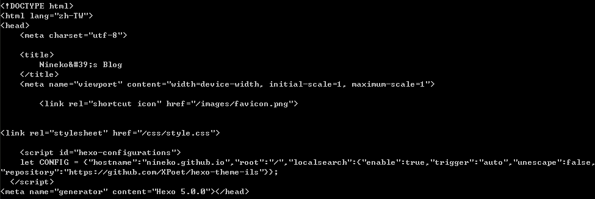
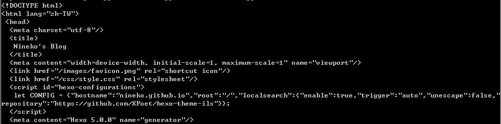
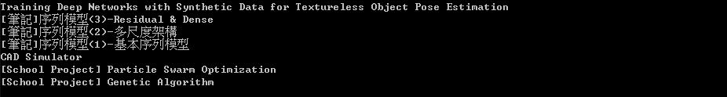
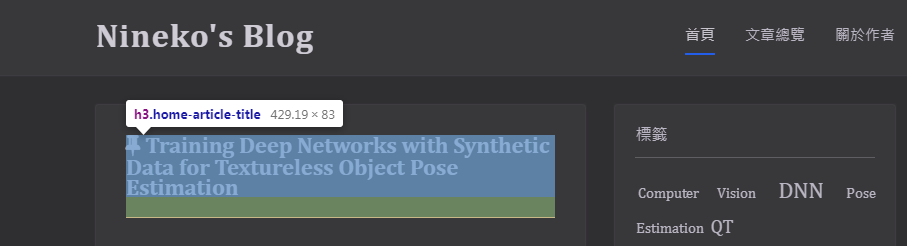
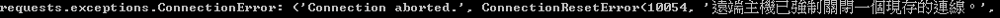
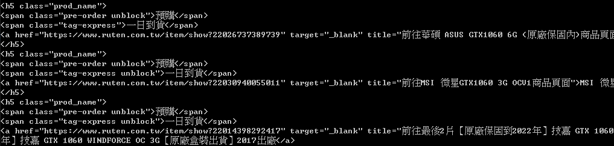
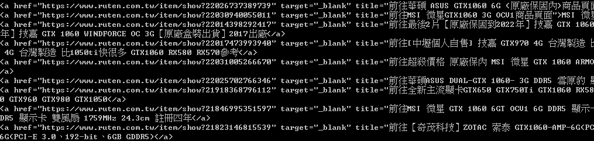
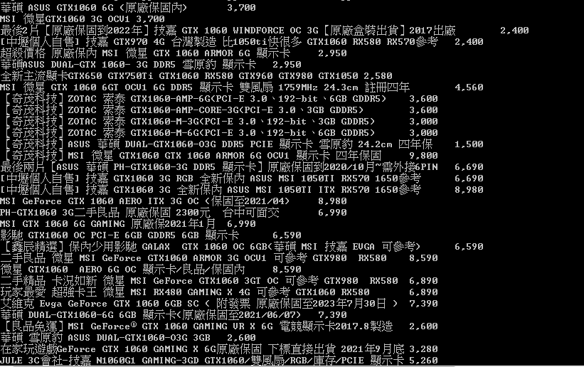
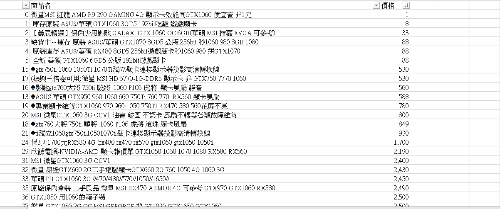

何謂爬蟲
爬蟲以白話來說的話就是一個從網頁上抓資料下來的動作，舉一個例子來說 : NVIDIA 最近出了新型號的顯示卡，那麼舊型號勢必會跌價，你今天想研究它跌價的趨勢，並試圖預估最低點撿個便宜，所以你每天都上露天去記錄金額的變化，但是每天上去記錄實在是太麻煩了，不僅容易忘記，記錄還得花上一段時間，面對這種情形，使用爬蟲便會是一個很好的解決方案，爬蟲的用意就是為了解決這種重複性高，大量且單調的工作，有了爬蟲工具，資料科學家便能更方便的蒐集資料，能夠專心的投入在分析上。
Python上的爬蟲
那麼在 Python 上該如何撰寫一個爬蟲程式呢？這方面 Python 為我們帶來了完善的解決方案，只要有 requests 加上 BeautifulSoup 兩個套件便可以進行爬蟲程式的撰寫。
requests
requests 套件給予我們在 Python 上能夠操作網頁的基本功能，如 GET、 POST 、 PUT、 DELETE、 HEAD、 OPTIONS、 Cookie 操作等功能，在本章節中主要使用 GET 來獲取網頁中的內容，是爬蟲的第一步。
安裝 requests :
pip install requests |
基本 GET 方法使用 :
import requests |

使用 GET 能夠將網頁的程式碼整個拿下來，所有網頁的資訊都在這裡頭，所以接下的的動作就是來解析並過濾出我們所需要的資訊，而這個則需要方才所說的另一個套件，BeautifulSoup。
BeautifulSoup
BeautifulSoup 能夠為我們解析 HTML，將其轉換成能夠快速查找資訊的資料結構供後續操作，並提供相應的查找方式，迅速過濾出使用者想要的標籤，可謂是爬蟲的一大利器。
安裝 requests :
pip install beautifulsoup4 |
基本方法使用 :
import requests |

不要看打印出來看起來只是稍微改了點縮排而已，但是內部已經建構了一個特別的資料結構，我們可以用 BeautifulSoup 提供的 select 方法來提取標籤內容。
查找標籤 :
import requests |

你看，只要短短的幾行程式碼便可以把我 Blog 文章的標題濾出，不過看到這的人可能會有個疑問，這個 h3.home-article-title 哪來的？現在的 Chrome 或是我常用的 OperaGX 等瀏覽器都有可以觀看程式碼的方式，像是 Chrome 能夠點 F12 進入或是在你想看的元件上右鍵選單中的檢查元件都可以跳到其程式碼的部分，觀看程式碼便可以得知其目前標籤，這個 h3.home-article-title 便是這麼來的。

實戰範例
基本單頁
那麼基本工具都準備好了，現在來實戰看看，我們利用一開始的小例子，去露天鎖定 NVIDIA GTX1060 的顯示卡，把商品名與價錢爬下來，GO！
首先得先去露天實際搜尋看看整個頁面，檢查一下商品名的標籤。
那我們就以剛剛的思路試著爬爬看
import requests |

什麼！被拒絕了，不過別緊張，這是因為很多網站都有著檢查 User-Agent 的機制，若你不設定 User-Agent 就會被檔下來，所以我們可以見招拆招，它需要 User-Agent ，我們就給它一個，在這邊我們可以使用自己瀏覽器的 User-Agent ，像我的就是 Mozilla/5.0 (Windows NT 6.1; Win64; x64) AppleWebKit/537.36 (KHTML, like Gecko) Chrome/85.0.4183.83 Safari/537.36 ，或是使用 Python 的 fake-useragent 套件產生，再者也可以使用現有的一些 User-Agent，像是 Google 就有 GoogleBot 可以使用，我們接下來就使用 GoogleBot 來進行，所以對程式碼進行一些修改後。
# New |

很好！順利爬到了，不過我們可以看到每個商品的 <h5> 中都還包了兩個 <span> 以及一個 <a> 標籤，我們需要的商品名是在 <a> 標籤中，所以我們將 select 的條件再往下一層。
title = soup.select("h5.prod_name a") |

這樣一來我們就可以只獲取 <a> 標籤中的內容，成功的爬到商品名稱，同理，價格的部分也可以以這樣的方式爬到，完整的程式碼如下，其中 price_list = price_list[1::2] 的理由是因為爬下來的資料每筆會有兩個價格，因為有些商品價格會是一個範圍，所以這邊使用 [1::2] 來取偶數項，也就是範圍中較大的價格值 :
import requests |

進階強化
剛剛我們成功爬下來單頁的資料，接下來要更加進階了，我們試著爬多頁資料，首先先來看看到第 2 頁網址會發生甚麼變化 :
#第一頁 |
可以明顯的看到多了 &p=2 這個參數，試著調整這個數值的確帶我們到了其他頁，所以我們現在知道 &p=2 代表著第二頁，藉由改變數字可以跳轉至其他頁，那麼問題就簡單了，我們可以修改 requests.get 的網址來獲取其他頁的訊息。
import requests |
在這邊我們做了幾點修改，首先是 requests.get 傳入 URL 的組合字串，藉由改變 page 參數來獲取其他頁資料，再來為了遍歷所有頁，使用 while 來持續遍歷，並藉由 requests.get 的 status_code ，成功為 200 做為是否繼續的判斷點，如此一來便可以將所有搜尋資料通通都爬下來了，接下來為了方便分析，我們要將其存成檔案，我們可以利用 csv 套件將其存成 .csv 檔，或是使用 pandas 套件處理，我們這裡採用 pandas 來進行處理， pandas 功能強大，雖然我們今天只要處理兩欄的小資料，但若之後需要處理較多欄位的大資料會比較方便， pandas 的安裝及使用我會到 深度學習的訓練資料準備 的文章內再解說，這邊就直接使用。
df = pd.DataFrame({'商品名':title_list, |
